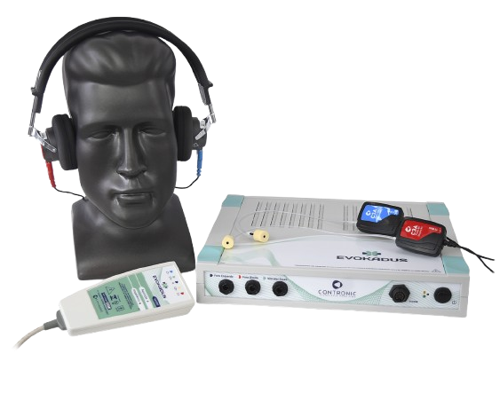

Evokadus - PEATE / BERA
Função do Aparelho
O Equipamento Bera refere-se a dispositivos utilizados para a audiometria de tronco encefálico (BERA), que avalia o funcionamento do sistema auditivo até a porção do tronco encefálico. O Evokadus é um dos equipamentos mais recentes, permitindo exames sem a necessidade de colaboração do paciente, ideal para bebês e crianças1. Equipamentos como o Evokadus e outros sistemas portáteis são essenciais para o diagnóstico de perdas auditivas neurossensoriais e avaliação da via auditiva5. O exame BERA é frequentemente realizado em recém-nascidos e crianças com riscos de perda auditiva, como a Síndrome de Down4. Esses equipamentos são indispensáveis para clínicas de diagnóstico auditivo e hospitais, oferecendo alta precisão e tecnologia avançada para a avaliação auditiva5.
Ficha Técnica do Aparelho
Modelo: Evokadus
Fabricante: Contronic Sistemas Automáticos Ltda (Brasil)
Exames Realizados:
- ABR – Resposta Auditiva de Tronco Encefálico
- ASSR – Resposta Auditiva de Estado Estável
- T-ABR – ABR de Triagem
- EcochG – Eletrococleografia
- MLR – Respostas de Média Latência
- LLR – Respostas de Longa Latência
- P300 – Potencial Cognitivo
- MMN – Mismatch Negativity
- cVEMP – Potencial Miogênico Vestibular Cervical
- oVEMP – Potencial Miogênico Vestibular Ocular
- gVEMP – Estimulação Galvânica Vestibular
Componentes Principais:
- Estimulador acústico e galvânico
- Interface biológica EVKBIO
- Software Evokadus para Windows
Acessórios Inclusos:
- Cabos de conexão
- Eletrodos de superfície
- Fones de inserção ou convencionais (auriculares)
Como o Exame é Realizado
O processo do exame BERA envolve algumas etapas para garantir a captação precisa dos sinais. Primeiramente, eletrodos são fixados na cabeça do paciente. Um eletrodo é colocado na testa e outros dois atrás das orelhas. Uma pasta condutora é aplicada sob os eletrodos. Em seguida, o paciente coloca fones de ouvido conectados ao equipamento, que emite estímulos sonoros. Os eletrodos captam as respostas elétricas geradas pelo nervo auditivo e pelo tronco cerebral, que são amplificadas, analisadas e exibidas em forma de ondas para interpretação do especialista.
Física Envolvida
O BERA funciona captando sinais elétricos minúsculos do sistema auditivo.
- Captação: Eletrodos de superfície detectam os sinais. A pele é limpa e usa-se pasta condutora para otimizar o contato.
- Amplificação e Filtragem: Os sinais são amplificados e filtrados para isolar o sinal do BERA.
- Média de Sinais: O equipamento realiza a média de milhares de respostas a estímulos repetidos, eliminando ruídos.
- Processamento Digital: Os sinais analógicos são convertidos em digitais e processados por software.
- Análise de Ondas: O profissional interpreta ondas de I a VII, cada uma correspondente a uma parte da via auditiva.
- Onda I: nervo auditivo (próximo da cóclea)
- Onda II: nervo auditivo (próximo ao tronco encefálico)
- Onda III: núcleo coclear
- Onda IV: complexo olivar superior
- Onda V: lemnisco lateral e colículo inferior
- Ondas VI e VII: tronco encefálico superior
Gráfico de Potenciais Evocados
Falhas Comuns e Soluções
| Problema | Causa | Solução |
|---|---|---|
| Ruído excessivo | Aterramento inadequado | Refazer a conexão e posicionar corretamente os eletrodos |
| Ausência de resposta | Paciente agitado ou má conexão | Garantir repouso e revisar cabos |
| Latência alterada | Configuração de filtro ou calibração | Revisar e recalibrar |
Importância Clínica
- Diagnóstico auditivo objetivo em bebês e pacientes não colaboradores
- Detecção de alterações no nervo auditivo ou tronco cerebral
- Avaliação vestibular através de VEMP
- Investigação cognitiva com P300 e MMN